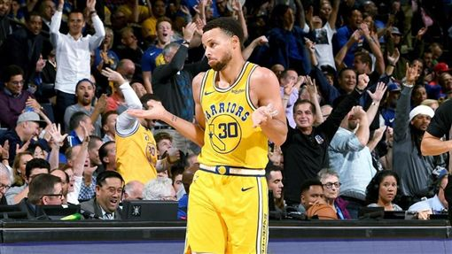

勇士慘成「落水狗」 名記：過去太羞辱人
金州勇士過去5年都闖進總冠軍戰，豪取3冠，即便說是稱霸世界籃壇最高殿堂也不為過，不過本季開季2戰合計狂輸47分，對手就算拉開差距仍然卯起來「往死裡打」，《ESPN》知名記者Nick Friedell就在推特上發文點出原因。

▲勇士過去組成超強團隊，常常3節打完就大幅領先。（圖／翻攝自推特）
「勇士目前的問題很多，而其中之一就是，過去幾年所有球隊都曾經被他們羞辱過，現在他們每場比賽都將嚐到對手復仇的怒火，我敢說所有球隊都會像快艇、雷霆一樣給勇士狠狠『招待』。」
Friedell在推特發文。
勇士「浪花兄弟」之一Klay Thompson仍在復健左膝十字韌帶撕裂傷，目前穩定的得分點僅剩一哥Stephen Curry，而這兩場開季失利他慘成對手的重點包夾對象，也使得Draymond Green的貧攻缺點暴露無遺。
勇士明（29日）將前往紐奧良鵜鶘主場作客進行「背靠背」賽程，面對同樣大多是以年輕球員組成的鵜鶘隊，這支全新的勇士隊將繼續低迷、亦或是觸底反彈，球迷們都相當關注。